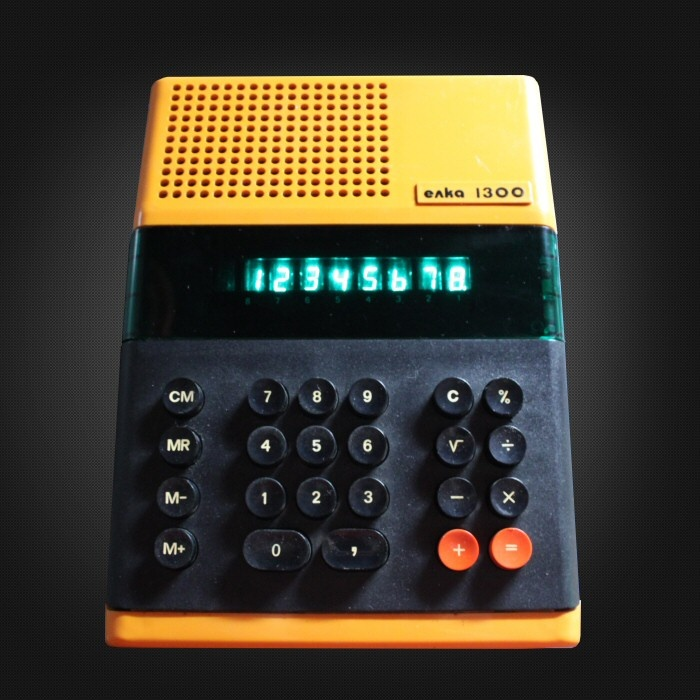
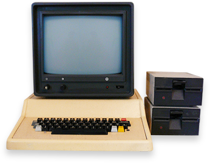

България заема водещо място в развитието на изчислителната техника вИзточна Европа през втората половина на XX век: 1961 г.: Създаден е първият изчислителен център у нас под ръководството на акад. Любомир Илиев. Започва разработката на първия български компютър – ЕИМ (Електронна Изчислителна Машина) „Витоша", въведена в експлоатация в края на 1963 г. 1964 – 1965 г.: Разработен е първият български електронен калкулатор ЕЛКА. 1966 г.: Създава се Заводът за изчислителна техника (ЗИТ) в София, където започва производството на машината ЗИТ-151. През 70-те години: Страната ни се специализира в производството на запаметяващи устройства с магнитна лента и магнитни дискове, както и на миникомпютрите ИЗОТ 310. 1979 – 1980 г.: Разработени са първите български персонални компютри под името ИМКО (Индивидуален Микро Компютър). 1982 г.: Произведен е вторият персонален компютър ИМКО-2, преименуван в „Правец 82", с което се поставя началото на легендарната серия български компютри „Правец". |
  |